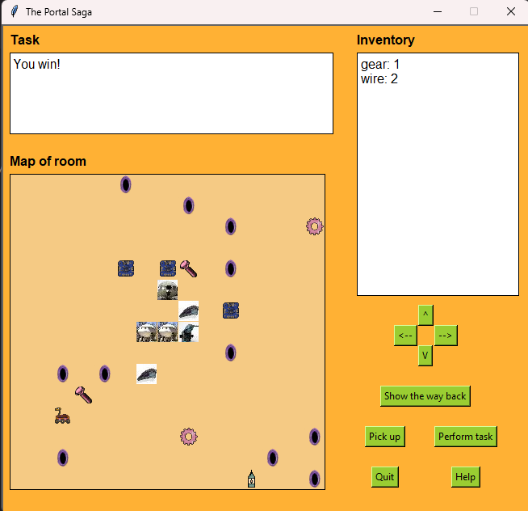

Portal Saga Game
Project Description
The Portal Saga is a game designed to challenge players in a space exploration scenario while demonstrating fundamental Data Structures and Algorithm concepts. The game begins with the player, a stranded space explorer whose spaceship has crashed on a random planet. The player must move around the plants using a rover to collect scattered parts necessary to repair their ship.
Core Gameplay Mechanics
- Exploration and Navigation
- Players navigate their rover using movement controls to travel across the planet
- Wormholes introduce a dynamic element, allowing transportation between planets.
- Item Collection
- Parts required for spaceship repairs are scattered throughout the different planets.
- Spaceship Repair
- Players use collected parts to perform tasks that restore the ship's functionality. This is done via a "Perform Task" action at the location of each broken piece.
- Damaged spaceship components like the engine, screws, and cabin have specific repair requirements.
- Game Navigation Features
- A "Show the Way Back" function highlights the wormhole leading back to the spaceship, aiding players in retracing their path.
- Completion Goal
- Successfully repair the spaceship by collecting the correct parts and fixing all damaged components to win the game.
Objectives and Key Concepts
The development of The Portal Saga emphasizes foundational data structures integral to computer science:
- Stacks
- Managing the rover's inventory system, where collected parts are pushed onto and popped off the stack when used for repairs.
- Queues
- Implementing event handling for player actions (movement, pick-up, repair tasks) using a queue to ensure operations execute in order.
- Lists
- Storing and updating the state of the spaceship's broken and repaired components, as well as managing the dynamic list of available parts in the game world.
Contributions
While the project had a foundational framework provided by professors, the majority of the gameplay mechanics were coded independently. Key contributions include:
- Implementation of Movement and Navigation Logic: Designed and coded the rover's navigation system to ensure fluid interaction between the player and the environment.
- Inventory Management Using a Stack: Built the inventory system, allowing players to collect, store, and utilize parts efficiently.
- Wormhole Transportation: Developed the two-way wormhole functionality, enabling seamless transitions between planets while preserving the game state.
- Repair System and Task Execution: Created the logic for determining repair requirements and executing tasks based on available parts, ensuring accuracy in spaceship restoration.